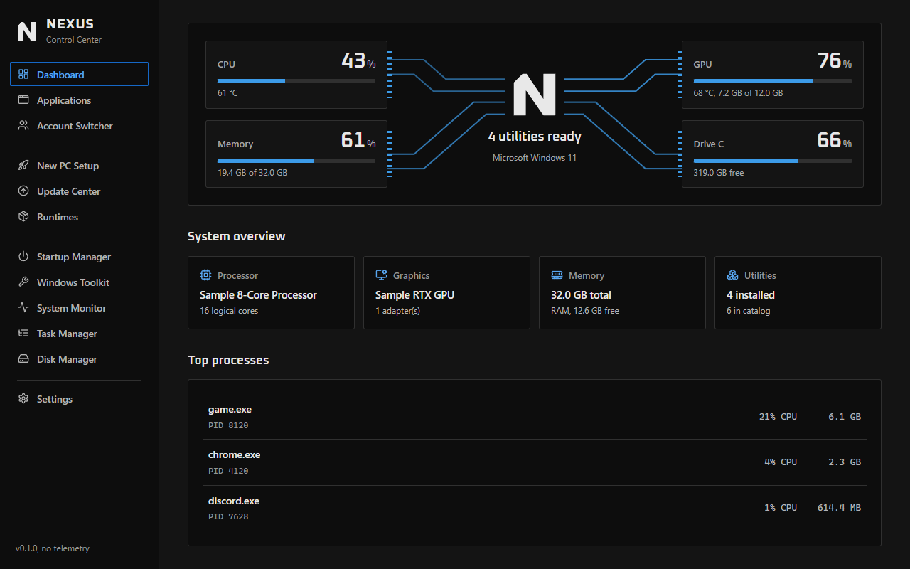
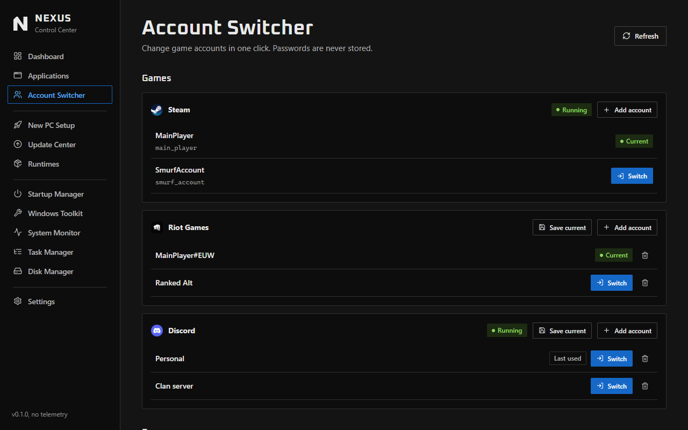
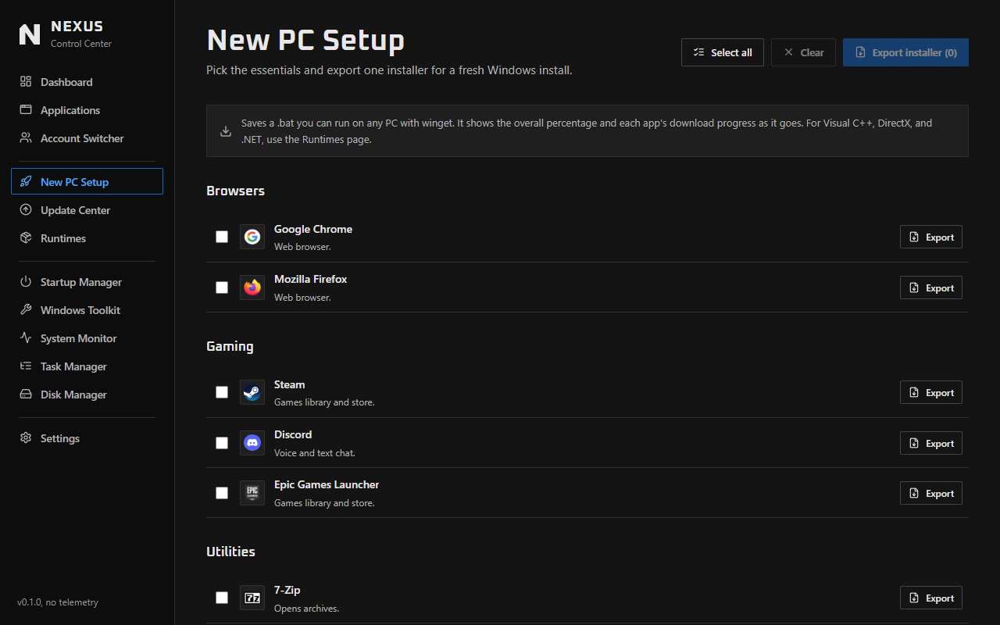
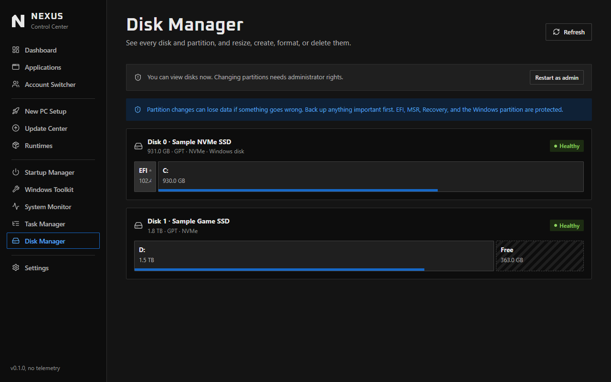

One app for your whole PC.
Free and open source. Switch accounts in one click, set up a new PC from one file, and clear out the junk filling your drive.

Change accounts without typing a password
Sign in once, save the account, and switch whenever you want. NEXUS closes the launcher, swaps the login, and opens it again.
- Steam, Battle.net, Riot Games, Discord, Epic Games and Ubisoft Connect
- Opens the right profile in Chrome, Edge, Brave or Firefox
- Passwords are never stored, and saved logins stay on your PC
- Won't switch while VALORANT, League or a Steam game is running

Set up a new PC with one file
Tick the apps you always install and export one installer. Run it on the new PC and it installs each app through winget, showing progress as it goes.
- Browsers, launchers, voice chat and everyday tools
- Keep the file on a USB drive and reuse it on every PC
- Runtimes finds the Visual C++ and .NET packages games ask for

See your drives, and change them carefully
Every disk is drawn to scale. Shrink a partition by the amount you want to free, or create, rename, format and delete, with guards on anything risky.
- Windows, EFI and Recovery partitions are protected
- Format and delete ask you to type the word to confirm
- Stops if the disks changed since the page loaded

Everything else in the box
- Temp file cleaner
- See what you can free before anything is deleted. Files still in use are left alone.
- Task Manager
- End a whole app at once. Core Windows processes can't be ended by accident.
- Update Center
- See which apps are out of date, then update one or all of them.
- Startup Manager
- Turn off the programs that slow down your boot.
- System Monitor
- CPU, memory and disks live, plus GPU stats on NVIDIA cards.
- Applications
- Your mouse, RGB and benchmark tools, found and launched from one list.
Open source, for everyone
NEXUS is free and made to help anyone with a Windows PC, whether you game or not. All of the code is public, so you can read exactly what it does and change it.
Anyone can contribute. Report a bug, suggest an idea, test a launcher, improve the docs, or send code. You don't need to be a programmer to help.
Get NEXUS
For Windows 10 and 11. Download it and run it, with nothing to sign up for and no telemetry. The only thing it fetches on its own is app logos, from Google's favicon service. NEXUS isn't code-signed yet, so Windows may show a SmartScreen warning the first time.